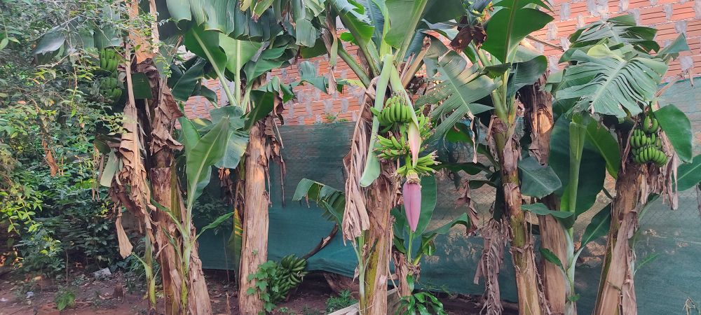
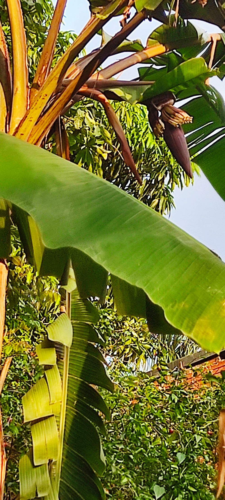
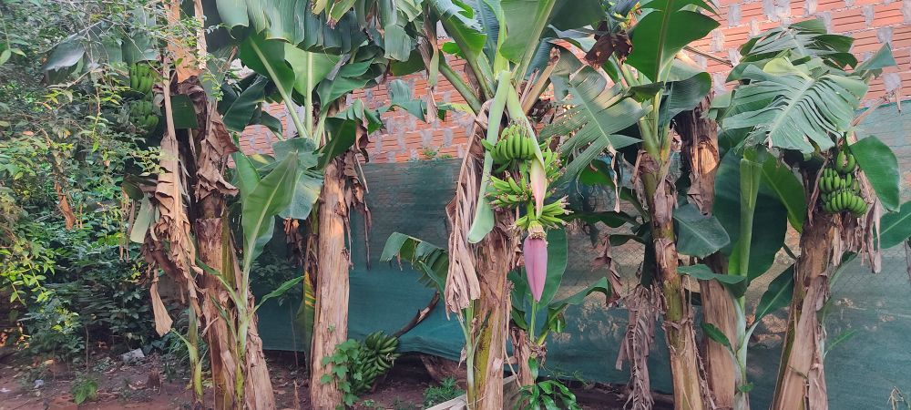
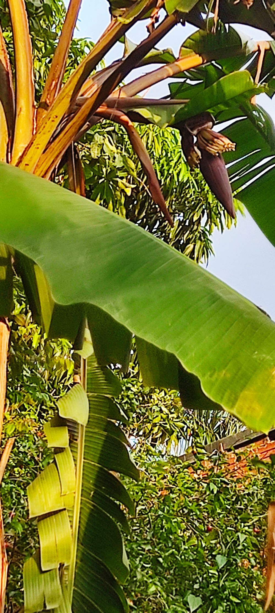

Fertilizer

In addition to the gas we use for cooking, the biodigester gives us a very useful byproduct, a very powerful, concentrated, and super nutritious fertilizer. The fertilizer is a liquid that comes out from the end opposite the mouth of the device and we collect it in a bucket to which we put a little tap to make it easier to package it. A while ago we sold it in one-liter bottles, then we started offering it for free, now we are using it in our bananas and garden and we hope to soon package it in 5-liter drums to sell it again. To use this fertilizer you must dilute it in 5 parts of water. For example, if you separate 1 liter of fertilizer, you add 5 liters of water. This is very important because it is very concentrated and using it pure can be counterproductive for the plants and ruin them.

 



To use it at home we use a 10 liter watering can to which we directly add part of the fertilizer and water to dilute it. We started the garden too recently to say if it helped or not, plus we are in a week of a lot of rain so that may be what is helping the garden too, but I can assure you that our bananas are much better since they received the fertilizer, when we arrived 2 and a half years ago the bananas did not grow any bunches until the end of the year. and now we have 5 bunches growing at the same time and a banana that in these almost 3 years did not give anything is growing a bunch.
Back to top